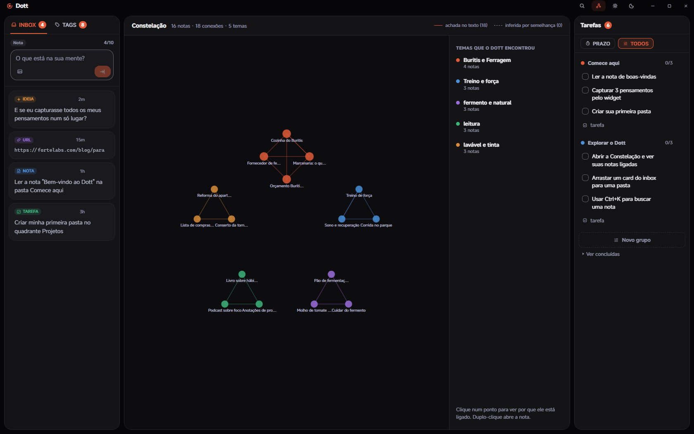
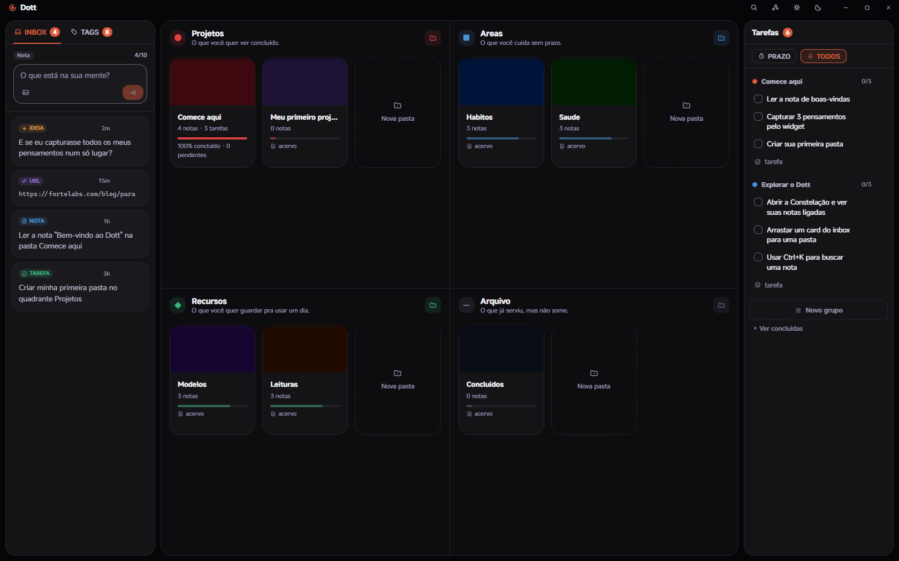
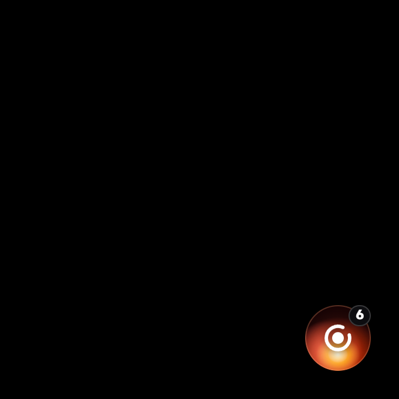
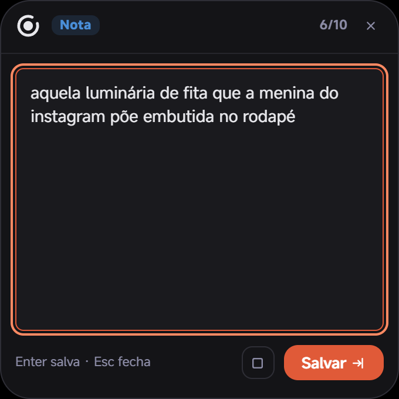
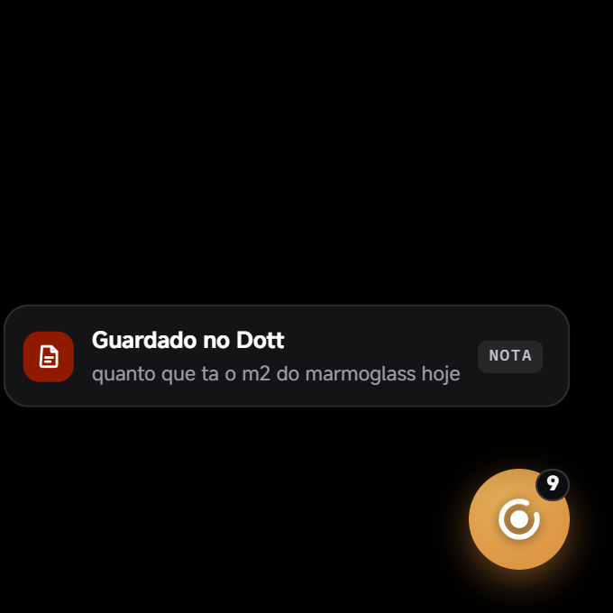
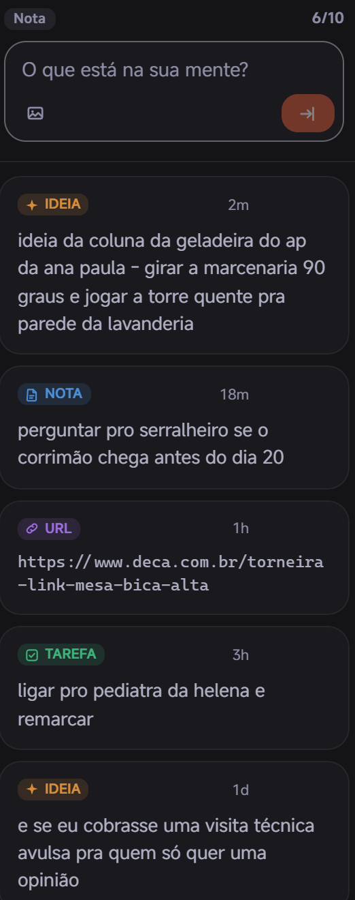
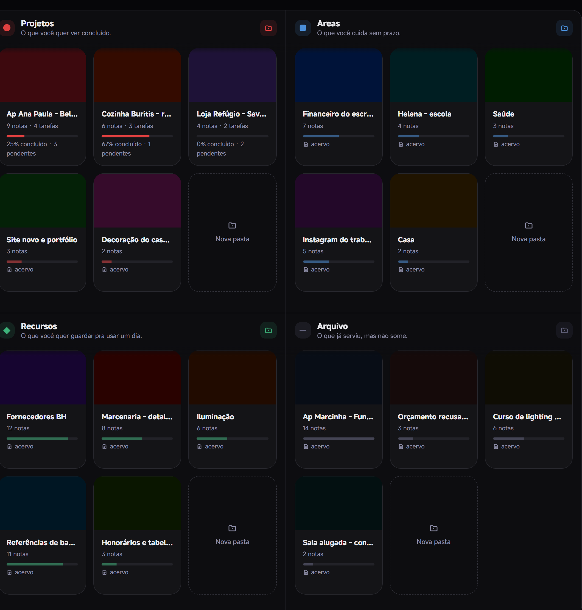
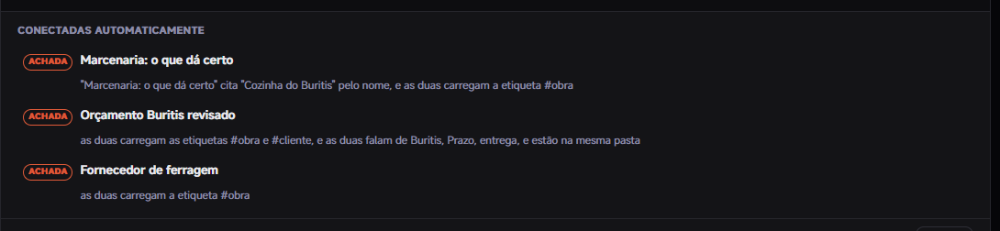
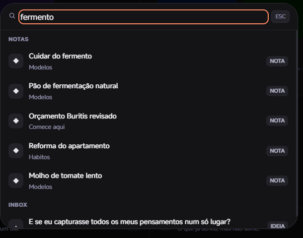
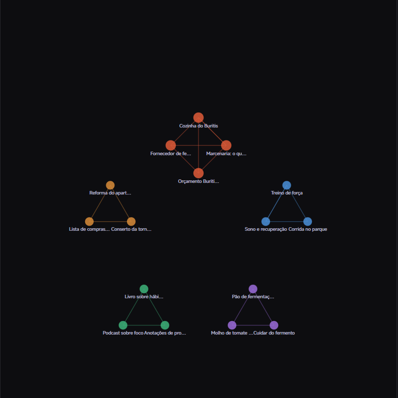

Um programa de Windows que fica num canto da sua tela. A ideia chega, você aperta duas teclas, escreve e volta pro que estava fazendo. Onde ela vai morar você decide depois, com calma, ou nunca.
Sem conta. Sem cobrança. E ele liga as suas notas sozinho.
Windows 10 e 11 · instalador de 2,9 MB · nenhum campo pra preencher


O Dott aberto, com a Caixa de Entrada de uma terça-feira qualquer.
Sinta agora: aperte Ctrl Shift Espaço ou clique na bolinha. A caixa abre aqui mesmo.
01 Você já viveu isso
Terça, 17h40, parada no trânsito. Você resolve, de cabeça, o problema que estava travado há três dias. Sente aquele alívio curto de quem destravou. E pensa: chegando eu anoto.
Chegando tem lição de casa, jantar, um áudio de dois minutos e meio.
Às nove da noite você senta na frente do computador e sabe que teve uma ideia boa. Você lembra do alívio. Não lembra da ideia.
Isso não é falta de memória. É que não existia, naquele minuto, um lugar barato o suficiente pra ela caber.
A ideia não foi embora. Ela nunca chegou a entrar.
02 Por que nada disso pegou
Todo lugar onde você já tentou anotar cobra alguma coisa antes da primeira letra: escolher a pasta, achar o título, decidir a etiqueta, esperar carregar. São quatro decisões para um pensamento de cinco segundos.
Ninguém paga isso. Você fez a conta certa.
| Onde você anota hoje | No que ele é bom | Onde ele te deixa na mão | O que o Dott faz nessa hora |
|---|---|---|---|
| Bloco de Notas | É o mais rápido que existe. Zero atrito. | Guarda e nunca mais organiza. Vira um paredão de quatrocentas linhas onde nada é achável, e você para de reler. | A mesma velocidade de anotar, mas com um lugar pra onde o item vai depois. |
| Notion | Promete ser a sua cabeça inteira, e é bonito. | Cobra administração antes de escrever: qual base, qual propriedade, qual visualização. E precisa de conta e de conexão. | Quatro gavetas que já vêm prontas. Não há o que configurar, então não há o que abandonar. |
| Mandar mensagem pra você mesma | Já está na sua mão, já está aberto. | O que você mandou desce na rolagem junto com o grupo da escola. Recuperar exige rolar meses. | O item cai numa Caixa de Entrada que você é obrigada a esvaziar, num arquivo que é seu. |
| Papel | Funciona com a mão suja de obra. | Não é buscável, não vai junto pro computador, e o papel se perde. | O Dott não briga com o papel na rua. Ele espera você sentar no computador. |
| O histórico de cópia do Windows | Pega o que você acabou de copiar. | Ele some quando o computador reinicia. E ele para no colar: não vira nota, não vira pasta, não vira nada. | O Windows guarda até você reiniciar. O Dott guarda até você apagar. |
Nenhuma dessas ferramentas é ruim. Elas só não foram feitas pra esse minuto.
03 Guardar
É a única parte do Dott que continua ligada quando o Dott está fechado.
Você está no meio de um desenho, de uma planilha, de uma conversa. A ideia chega.
Aperta Ctrl + Shift + Espaço. Uma caixa aparece por cima do que você estava fazendo. Você escreve a frase do jeito que ela saiu da sua cabeça, sem título, sem pasta, sem etiqueta. Aperta Enter.
A caixa some. Aparece um aviso curto dizendo o que foi guardado. E você já voltou pro desenho.
Se você acabou de copiar alguma coisa, ela já vem escrita na caixa quando você abre: é só dar Enter.
Não tem janela pra abrir, programa pra procurar, decisão pra tomar. É por isso que dá pra fazer isso todo dia.

Ela fica acesa no canto, esperando. Clique pra abrir, arraste pra mudar de lugar.

A caixa abre por cima de tudo. Você escreve e dá Enter.

Guardado no Dott, e você nem saiu do que estava fazendo. O aviso some sozinho em menos de três segundos. Este é de outra ideia, do mesmo dia.
04 Esvaziar
Do primeiro ao décimo. No décimo, acabou o espaço.
No décimo item, o Dott trava a caixa e não deixa você guardar mais nada até esvaziar.
Parece defeito. É o contrário: é a única razão de isso aqui não virar o mesmo paredão de quatrocentas linhas do bloco de notas.
Esvaziar leva menos de um minuto. Você arrasta o item pra uma pasta e ele vira uma nota. Ou transforma em tarefa. Ou joga fora, sem cerimônia e sem culpa: metade do que a gente anota existia só pra sair da cabeça.
Quando você abre o item, ele já chega com uma pasta sugerida. Você aceita ou escolhe outra.
Você não precisa organizar. Você precisa esvaziar.

05 Onde as coisas vão
Elas já vêm montadas. Você não precisa aprender método nenhum pra usar o Dott.
Toda coisa que você anota cabe numa destas quatro. A pergunta que decide é sempre a mesma: isso tem fim, ou é pra sempre? Isso é pra agora, ou é pra um dia?
Não tem nome pra inventar, estrutura pra montar, campo pra configurar. As quatro estão lá desde a primeira vez que você abre o programa. Você só cria as pastas dentro delas, e as pastas você já sabe quais são, porque são as suas obras, as suas contas, os seus fornecedores.
O que você quer ver concluído.
O que você cuida sem prazo.
O que você quer guardar pra usar um dia.
O que já serviu, mas não some.

A reforma do Buritis tem fim. O financeiro do escritório não tem. Pronto, decidido.
06 Guardar de verdade
Nem tudo que você precisa guardar tem tamanho de recado.
"A cliente odeia branco. Falou três vezes. Não é implicância com cor clara, é com hospital: o pai ficou internado seis meses." Isso não cabe numa lista de tarefas, não cabe numa planilha, e se você esquecer, custa o cliente.
No Dott isso é uma nota inteira, com o tamanho que precisar. Você escreve como escreve.
E aqui acontece a parte que nenhum caderno faz: você não liga nada. O Dott lê o que você escreveu e encontra sozinho as notas que têm a ver umas com as outras. A anotação da reunião acha o orçamento daquele cliente sem que nenhuma das duas cite a outra, porque as duas falam das mesmas coisas.
E ele nunca esconde de onde veio a ligação. Achada quer dizer que estava escrita no seu texto. Inferida quer dizer que ele deduziu por semelhança. Quando não existe parentesco de verdade, a nota fica sozinha mesmo: o Dott prefere ficar quieto a inventar. Isso roda dentro do seu computador, em milésimos de segundo, sem mandar nada pra fora e sem inteligência artificial nenhuma.
Pra achar qualquer coisa depois, Ctrl + K e o começo da palavra.



07 Onde os seus dados estão
Promessa de privacidade é fácil de escrever e impossível de conferir. Por isso contamos só o que dá pra conferir.
Hoje, no modo local, que é como o Dott abre assim que você instala, ele não manda nada pra fora: não existe servidor pra onde enviar, não existe conta pra criar, não existe login pra fazer.
Suas notas são arquivos de texto numa pasta do seu computador. Você pode abrir cada uma delas em qualquer editor, hoje ou daqui a dez anos, mesmo que o Dott tenha deixado de existir.
E nenhum modelo de inteligência artificial lê o que você escreve, porque não tem nenhum aqui dentro. Quando o Dott percebe que o que você colou é um link, ele está olhando o formato do texto: é regra fixa, escrita à mão por gente, e roda dentro da sua máquina.
0 bytes enviados
há 0s nesta página
é assim nesta página, toda vez que você abrir
Texto puro numa pasta sua. Abre em qualquer editor, hoje e daqui a dez anos.
Baixou, abriu, escreveu. Não tem cadastro.
Nenhum algoritmo lê suas notas. Não tem algoritmo.
Hoje, só neste computador. Sincronizar entre aparelhos está a caminho, com lista de espera dentro do app.
08 A letra que não é miúda
Melhor você ler aqui do que descobrir depois de instalar.
Se alguma dessas cinco for essencial pra você, este não é o programa. Sem ressentimento.
09 Perguntas diretas
É. Não tem preço, não tem plano, não tem cadastro e não tem cartão. Você baixa o instalador e usa. O Dott é uma ferramenta pessoal, não uma assinatura.
Uma vez só, na instalação. O instalador tem 2,9 MB e, se o seu Windows ainda não tiver um componente que o Dott usa pra desenhar a tela, ele baixa esse componente na hora. É rápido e acontece sozinho. Depois disso, no modo local, que é como o Dott abre hoje, funciona sem internet: no avião, com o roteador desligado, do jeito que for. Sincronizar entre aparelhos é uma escolha futura, com lista de espera dentro do app, e aí sim vai pedir conexão.
Ele vai avisar "editor desconhecido", porque o instalador ainda não tem assinatura digital. É normal em programa novo e pequeno. Clique em "Mais informações" e depois em "Executar assim mesmo". A instalação não pede senha de administrador e não pede permissão de rede.
Suas notas são arquivos numa pasta do seu computador, não ficam presas dentro do programa. Antes de desinstalar, clique em fazer backup: o Dott copia tudo pra Documentos > Dott Backups, uma pasta que é sua e continua lá depois.
Não tem pegadinha. Se tivesse, estaria escrito aqui.
Baixe, instale, aperte Ctrl + Shift + Espaço e escreva a primeira coisa que estava te incomodando. Leva menos de um minuto, e não vai ser pedido nada de você.
Windows 10 e 11 · instalador de 2,9 MB · sem cadastro, sem e-mail, sem cartão
Beta aberto. Se algo quebrar, quebra na sua máquina e não sai de lá.